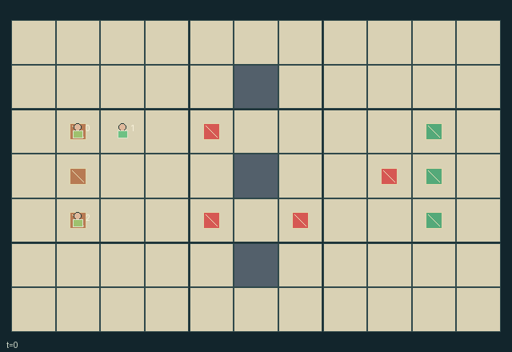

GI175 · Lantern Convoy

Transport fragile cargo to its matching destination while choosing who carries cargo, who pays finite illumination and which stale reports to share.
Identity and original contract
3 independently actionable roles; 11 discrete commands per role; 184 native observation columns per role; original horizon 96 steps. Declared per-step reward range: -10.0 to 10.0. Observation regime: partially_observable.
Source SHA-256: 57c802dfeaad65e5f760a9ebeb08cb53a8704c8a8c65c045b2a6e3900db527a7
The objective, rewards, population, map and horizon remain original. A preview is not a success claim.
Objective and gameplay
Transport fragile cargo to its matching destination while choosing who carries cargo, who pays finite illumination and which stale reports to share.
Two transferable lanterns expand actual peer hazard observations. One-cargo carrying capacity and adjacent handoffs change peer opportunities; report relays copy aged hazard samples without refreshing timestamps.
- All three explorers are controlled. Movement follows public walls; co-location and crossing are allowed. Each explorer carries at most one cargo and one lantern.
- Cargo pickup/drop and delivery use exact cells. Cargo can be passed to an adjacent free carrier; lantern and charge can be passed to an adjacent non-holder.
- Switch-on light consumes one battery per tick, including the toggle tick. The last paid unit still illuminates its snapshot; no charge regenerates.
- A hazard is directly sensed within distance one, or within distance four while lit by a lantern at distance at most three. Walls do not occlude this discrete glow.
- Hazards pulse on the native clock. Armed contact damages carried cargo; destroyed cargo disappears from active cargo and never delivers.
- Relay copies the freshest available sample to adjacent peers in one hop. Sample time is retained; stale armed values are never shown as current hazard state.
- Public cargo telemetry excludes private priorities. Unseen hazard sprites are hidden in role views; complete state is debug-only.
Ending: All cargo is delivered or destroyed; these outcomes are distinguished in state. H=96 otherwise truncates.
What this game explores
Information, sensing & communication: Who knows a fact, when it was measured, and whether it was communicated are separate state variables. Test memory or communication using only the same role-visible evidence.
Joint transport & shared access: Positions, load geometry, occupancy and persistent access constrain whose action can succeed next. Distinguish physical handoff, shared controls and simultaneous force from a cosmetic cooperation label.
Survival, protection & rescue: Protection and repair alter another role's future feasible actions. Record losses, exposure, rescue and infrastructure as well as delivery; survival is determined by the actual kernel.
These are questions supported by rule structure, not observed learning effects.
Play it: operating walkthrough
crucibles play --game gi175Keep Python running and open its printed address. Select this game, set a seed and press Create session. The game itself is always English.
Assign a role range to Host with Assign / take over, or Assign all roles. Invite a second participant with Create player invitation, then assign a disjoint subset. Every original role is available.
For every owned role choose a legal command and press Queue. Arrow keys / WASD queue a declared directional action for the current role camera when available. Space or Advance one joint step advances everyone together. Non-directional games use the selectors.
Unqueued roles use the labelled untrained uniform-legal policy. Take over or release roles before the next step without resetting. Full-state debug is privileged and permanently logged; role cameras preserve permissions. Close the session to retain logs. Server restart does not restore sessions.
Complete command reference
IDs and English labels exactly match the manifest. Availability depends on role, resources, location and phase. An available action can still have no productive effect.
0·wait
1·north
2·east
3·south
4·west
5·toggle lantern
6·pass lantern and charge
7·pickup or drop cargo
8·pass cargo
9·deliver held cargo
10·relay timestamped samples
Roles and capability identifiers
These original role names describe capabilities, not interchangeable skins. Check each owned role's legal selector before planning handoffs.
agent_0·explorer prioritizing cargo 0
agent_1·explorer prioritizing cargo 1
agent_2·explorer prioritizing cargo 2
Information and observation permissions
Fixed walls, all explorer/cargo positions, possession, battery and delivery status are public telemetry. Hazard positions/current pulses are visible only within Manhattan 1, or within observer distance 4 when some glowing lantern is within hazard distance 3. Walls do not occlude this abstract light. Private cargo priorities and peer memories are absent. A role may receive a timestamped one-hop report from an adjacent acting sender.
The GIF is full-state debug and may reveal hidden entities or private state. Train on obs[agent], not the picture, state tree or another role's private row. Field slices and visibility are in the original manifest.
Reinforcement-learning integration
import jax
from crucibles_jaxmarl import make
env = make("gi175")
key = jax.random.PRNGKey(0)
key, rk, ak, sk = jax.random.split(key, 4)
obs, state = jax.jit(env.reset)(rk)
actions = env.sample_actions(ak, state)
obs, state, rewards, dones, info = jax.jit(env.step_env)(sk, state, actions)
done = dones["__all__"]Observations are float32 vectors of width 184; actions are scalar int32; masks have 11 entries. Supply all 3 roles each transition. Masked sampling is an engineering reference, not a trained learner.
step_env retains terminal data without reset. step performs outer autoreset and keeps terminal data in info["raw_state"] and info["raw_observation"]. Use dones["__all__"] for episode boundaries; separate completion, failure and time limit in analysis.
JIT or vmap equal identities and shapes. Split independent reset, policy and transition keys. Group different shapes explicitly; do not shrink the population or horizon. Host rendering stays outside training.
Training questions and fair evaluation
Define valid completion from the objective before fitting. Preserve original rewards and also report real deliveries/services, losses, resource state, unresolved episodes and per-role returns. Animation is not a reward signal.
Who knows a fact, when it was measured, and whether it was communicated are separate state variables. Test memory or communication using only the same role-visible evidence.
Positions, load geometry, occupancy and persistent access constrain whose action can succeed next. Distinguish physical handoff, shared controls and simultaneous force from a cosmetic cooperation label.
Protection and repair alter another role's future feasible actions. Record losses, exposure, rescue and infrastructure as well as delivery; survival is determined by the actual kernel.
Compare memory, communication or centralized critics under matched actor information. Declare critic access; keep actor inputs role-filtered. Match partner/opponent distributions, masks, compute and checkpoint selection. Final tests never enter fitting or selection.
Independent training runs or source-pairing blocks are inferential units; episodes from one policy are not independent training replications. Save hashes, keys, versions, device, time and cost. Negative, zero, failed and indeterminate outcomes are valid. No trained checkpoint or target score is supplied.
Classification and evidence
Overlapping editorial labels are reading aids, not proof of novelty, difficulty, strategic equivalence or learning effects.
- Information, sensing & communication
- Evidence
manifest.task.objective: Transport fragile cargo to its matching destination while choosing who carries cargo, who pays finite illumination and which stale reports to share.
- Evidence
scene.rules.3: A hazard is directly sensed within distance one, or within distance four while lit by a lantern at distance at most three. Walls do not occlude this discrete glow.
- Evidence
scene.rules.6: Public cargo telemetry excludes private priorities. Unseen hazard sprites are hidden in role views; complete state is debug-only.
- Joint transport & shared access
- Evidence
manifest.task.objective: Transport fragile cargo to its matching destination while choosing who carries cargo, who pays finite illumination and which stale reports to share.
- Evidence
manifest.actions.7: pickup or drop cargo
- Evidence
manifest.actions.8: pass cargo
- Survival, protection & rescue
- Evidence
scene.rules.3: A hazard is directly sensed within distance one, or within distance four while lit by a lantern at distance at most three. Walls do not occlude this discrete glow.
- Evidence
scene.rules.4: Hazards pulse on the native clock. Armed contact damages carried cargo; destroyed cargo disappears from active cargo and never delivers.
- Evidence
scene.rules.5: Relay copies the freshest available sample to adjacent peers in one hop. Sample time is retained; stale armed values are never shown as current hazard state.
Source, receipts and preview limits
The world-only English GIF replays saved untrained legal actions through the original kernel. At most 25 actual endpoints include initial and terminal state; no invented interpolation. It is full-state debug, not the role observation.
Original source, observation slices, manifest and mechanism
Native receipt · Presentation receipt
Engineering passes do not establish learning. Nonzero floating differences remain recorded and undetermined; no new tolerance was introduced. Human scores remain unverified.